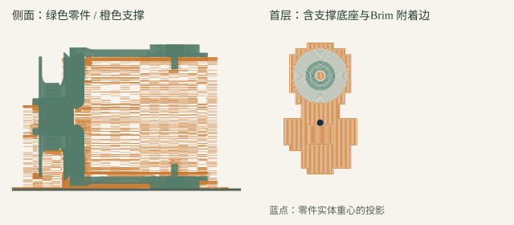
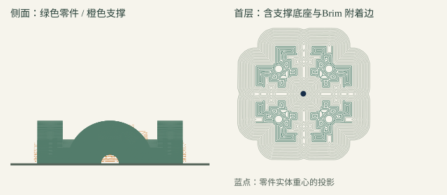

C01 × 1
叉架 · 耳部平面贴床，偏置柄下必须加支撑

平面贴床面积 98.9 mm²。叉架单独的重心投影超出耳面接触区；不能关闭支撑。
这是四件打印主体与标准件组成的双轴核心，用来验证两个轴一起转动时的配合。你已经装好的长臂小样继续用；本包不包含外侧扭转座、传感器、连接架或完整人偶。
新版已纠正叉架摆放，并完成实际带支撑切片。仍需服务商按真实打印机和耗材复核支撑、孔槽清理与附着情况，再确定打印。M1.6 合拢紧固件的商品尺寸也还要核对。
原摆放仅以最低点到达 Z=0 判断贴床，没有验证接触面积，这是之前检查的遗漏。修正后，两个叉架以耳部平面贴床；偏置的柄和上方悬空部分仍要支撑。加宽底部Brim 附着边可以帮助附着，但不能替代悬空处的支撑。
叉架 · 耳部平面贴床，偏置柄下必须加支撑
平面贴床面积 98.9 mm²。叉架单独的重心投影超出耳面接触区；不能关闭支撑。
叉架 · 耳部平面贴床，偏置柄下必须加支撑

平面贴床面积 98.9 mm²。叉架单独的重心投影超出耳面接触区；不能关闭支撑。
承力环半件 · 分割平面贴床，检查孔槽支撑能否取出

平面贴床面积 312.7 mm²。零件实体重心投影位于自身接触区内。
承力环半件 · 分割平面贴床，检查孔槽支撑能否取出
平面贴床面积 312.7 mm²。零件实体重心投影位于自身接触区内。
示意来自本轮真实 STL 与 PrusaSlicer 2.9.6 生成的路径。橙色是支撑，灰色是首层Brim 附着边，蓝点是零件实体重心投影。为了可读，侧图每三段支撑路径显示一段，首层图保留全部路径。底部凸包与重心检查通过，只表示几何承托范围合理，不代表热床附着、层间强度或支撑可拆性已经实测。
先沿用这次成功小样的材料与工艺，并记录耗材品牌、材质、喷嘴和层高。目前不知道实物实际使用了什么材料，不能把某个材料名字写成已验证结论。
模型单位：mm，100% 比例，不要整体缩放。 四件各一件；按新版 3MF 摆放，保持平面贴床。 C01 / C02：必须启用支撑，承托偏置柄和上方悬空面。 C14 / C15：分割平面贴床，检查内部孔槽；支撑必须能够取出。 切片起点：0.4 mm 喷嘴、0.2 mm 层高、6 圈墙、5 层顶底、100% 填充、5 mm Brim 附着边。 本轮诊断使用普通自动支撑、45° 阈值（从水平面算）、3 层接触面、0.2 mm 顶部间隙。 以上仅是本轮切片起点；服务商按 A1 / P1S 与实际材料调整，不直接套用其他切片软件的角度定义。 逐层确认：首层连续、柄下有支撑、后续层没有未承托的孤岛；孔槽支撑可拆除。 支撑不要留下凸起影响垫圈平贴；孔径若需修整，先确认金属件能顺滑装入，不能靠强拧强压。 先看服务商带支撑的切片预览，再打印试件。
本轮四件全部完成离线诊断切片，两个叉架都有实际支撑路径；完整零件和逐层挤出质心的投影均在“零件＋支撑”首层接触凸包内。这不是打印机实测，也未验证所有层的连接、冷却变形及支撑拆除过程。没有提供可直接上机的 G-code。
3MF 仅含几何与摆放，不含支撑设置或设备配置。导入 Bambu Studio 后仍须手动启用支撑并核对预览。
| 零件 | 数量 | 尺寸与说明 |
|---|---|---|
| 轴肩螺钉 | 4 | Φ4 × 8，M3 螺纹长 6 mm，头径 7、头高 3，3 mm 内六角 |
| M4 大垫圈 | 8 | 外径 12、厚 1，同现有小样 |
| M4 普通垫圈 | 4 | 外径 9、厚 0.8，同现有小样 |
| A8 碟簧 | 8 | 外径 8、内径 4.2、厚 0.4，每处两片反向，现货不锈钢 |
| M3 螺母 | 4 | 对边 5.5、厚 2.4 |
| M3 大垫圈 | 4 | 外径 9、厚 0.8 |
| 承力环合拢螺钉 | 4 | 参考 M1.6 × 6，头径 3、头高 1.6，商品尺寸待核对 |
| 承力环合拢螺母 | 4 | 参考 M1.6，对边 3.2、厚 1.3，商品尺寸待核对 |
除最后两种 M1.6 紧固件，其余沿用你已装好的那批规格。垫圈图里的 M3 / M4 是商品标称，已有成功装配支持复用该批零件；不把标称孔径当成精密实测值。此核心不需要旧长臂的 M3×35 壳体连接螺钉，也不需要定制金属件。
现有长臂的小样成功说明该批尺寸和装配可行，尚不能代替双轴测试。两轴核心还没有实物结果，整个人偶也未完成制造验证。